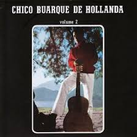
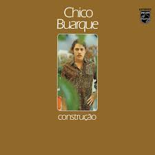
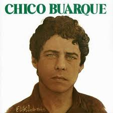

Discografia de Chico Buarque
Chico Buarque de Hollanda (1966)
O álbum de estreia de Chico Buarque, um marco na MPB, com canções como "A Banda" e "Samba Branco". Mistura influências do samba, bossa nova e música erudita.
Chico Buarque de Hollanda -Volume 2 (1967)
Traz clássicos como "Apesar de Você" e "Roda Viva", com letras engajadas e melodias marcantes.
Chico Buarque de Hollanda -Volume 3 (1968)

Um álbum de transição, com canções mais introspectivas e explorando temas como o amor e a solidão.
Chico Buarque de Hollanda -Volume 4 (1970)
Um álbum com canções que exploram temas como a saudade, a perda e a esperança.
Umas E Outras (1969)
Um disco que consolidou o estilo de Chico Buarque, com canções como "Com Açúcar, Com Afeto" e "O Que Tiver Que Ser". A música "Apesar de Você" foi censurada na época, mas se tornou um hino contra a ditadura militar.
Construção (1971)
Um dos álbuns mais aclamados de Chico Buarque, com canções como "Construção" e "Paratodos". Aborda temas sociais e políticos com maestria, usando a música como ferramenta de crítica social.
Vida (1980)
Um álbum com canções que refletem sobre a vida, a morte e a passagem do tempo.
Alamanaque (1981)

Um álbum com canções que exploram temas como a memória, a história e a cultura brasileira.
Chico Buarque en Español (1982)
Um álbum com canções de Chico Buarque traduzidas para o espanhol.
O Melhor de Chico Buarque (1984)
Uma coletânea com algumas das melhores canções de Chico Buarque.
Carioca (2007)
m álbum com canções que celebram a cidade do Rio de Janeiro.
Caravanas (2017)
Um álbum com canções que exploram temas como a viagem, a aventura e a busca por novos horizontes.